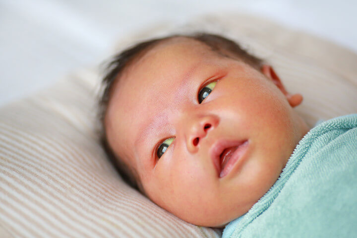

Ictère néonatal
Manque d'oxygène chez le fœtus ou le nouveau-né, pouvant survenir avant, pendant ou après l'accouchement. Cela peut entraîner des lésions cérébrales ou d'autres organes vitaux.
Les principales sous-types d'asphyxie périnatales:
Naissance survenant avant 37 semaines de gestation. Les prématurés sont plus susceptibles de présenter des complications respiratoires, digestives et neurologiques.
Sous-types :
Difficulté respiratoire chez le nouveau-né, souvent due à une immaturité pulmonaire. Elle se manifeste par une respiration rapide, des gémissements et une cyanose.
Sous-types :
Infections transmises de la mère à l'enfant pendant la grossesse, l'accouchement ou peu après la naissance. Elles peuvent provoquer des complications graves comme la septicémie ou des troubles neurologiques.
Sous-types :

Destruction des globules rouges du fœtus ou du nouveau-né par des anticorps maternels, souvent liée à une incompatibilité Rhésus. Cela peut entraîner une anémie sévère et un ictère.
Sous-types :
Destruction des globules rouges du fœtus ou du nouveau-né par des anticorps maternels, souvent liée à une incompatibilité Rhésus. Cela peut entraîner une anémie sévère et un ictère.
Sous-types :
Activité électrique anormale dans le cerveau du nouveau-né, se manifestant par des mouvements involontaires. Elles peuvent être causées par des troubles métaboliques, des infections ou des lésions cérébrales.
Sous-types :

Lésions cérébrales résultant d'un manque d'oxygène et de sang au cerveau pendant la période périnatale. Elle peut entraîner des troubles neurologiques permanents.
Sous-types :
Déséquilibres chimiques dans le corps du nouveau-né, tels que l'hypoglycémie ou l'hypocalcémie, pouvant affecter le développement et la santé globale.
Sous-types :
Problèmes tels que le placenta prævia, le décollement placentaire ou la compression du cordon ombilical peuvent compromettre l'apport en oxygène et en nutriments au fœtus.
Sous-types :